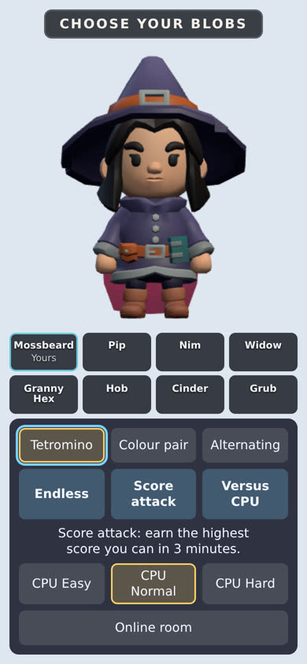

Tuesday 17 November
Versus CPU results screen
Which menu? Blobs
Art pack failed to load. Retrying from the backup. Back by 10:15.

Blobs
A
1 of 2
Tuesday 17 November
Versus CPU results screen
Which menu? Blobs
Art pack failed to load. Retrying from the backup. Back by 10:15.